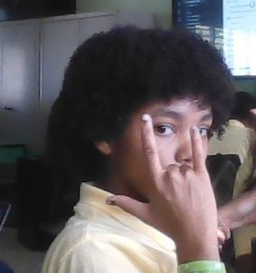
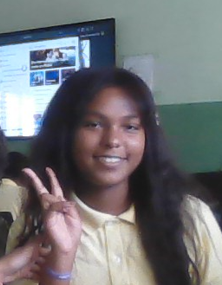
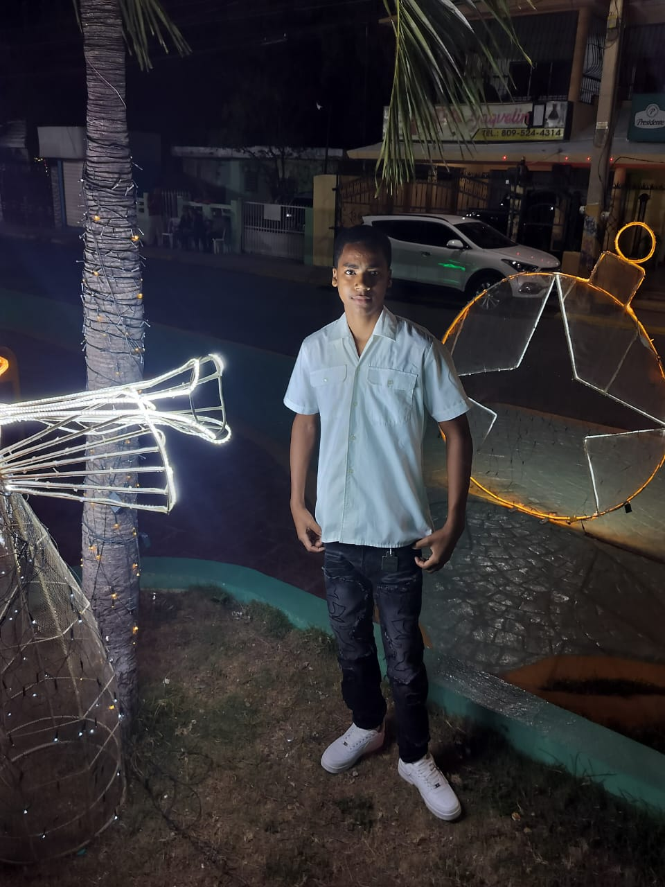
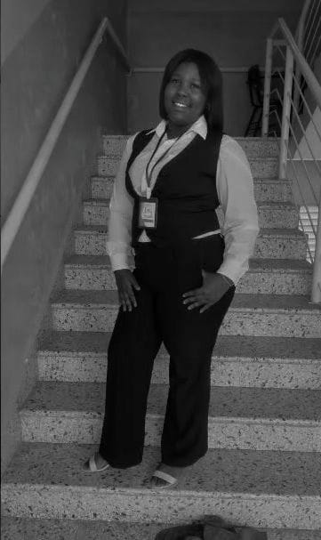

Desarrollador Web y Diseñador
Creé la estructura de las páginas, el diseño responsive, la animación del logo y los botones de WhatsApp. También optimicé las imágenes para que carguen rápido.

Especialista en Contenido y Marketing
Redactó las descripciones de los jabones, investigó los ingredientes naturales y diseñó el contenido para redes sociales. Aportó ideas para que el negocio se vea más atractivo.

Encargado de contactos comerciales
Realizó la búsqueda y recopilación de contactos potenciales de compradores y distribuidores para apoyar la expansión de YUNE Natural Soaps.

Apoyo en organización y logística
Colaboró en la coordinación general del proyecto, revisión de avances y alineación de elementos para cumplir con los plazos establecidos.